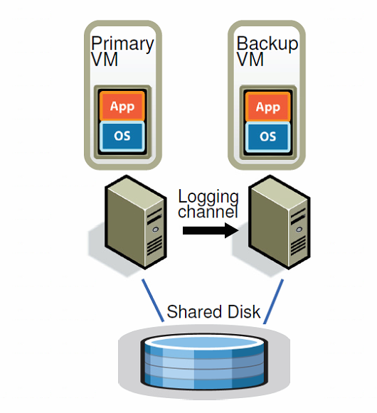
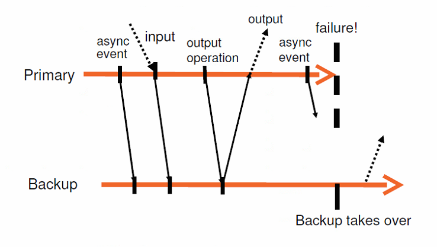

本文介绍用于虚拟机的容错机制。通过建立backup备份机同步primary虚拟机的状态，使得当primary宕机时，备份机可以立刻补上，并且在整个恢复的过程中，用户并没有感受到太大的差异。从用户视角出发，他们自始至终都在访问同一台虚拟机，备份机的存在对他们而言是透明的。这一种容错机制，个人认为适用于计算节点的容错恢复，比如MapReduce中Master,Map和Reduce节点的状态保存和数据备份。
参考：
The Design of a Practical System for Fault-Tolerant Virtual Machines
容错虚拟机分布式系统的设计
在论文发布的年代，有两种常见的虚拟机内容备份/错误恢复策略：
- 第一种是primary/backup策略， 这种策略要求将primary虚拟机的所有活动，包括但不限于CPU、内存、I/O读写等的状态全部通过网络同步到备份虚拟机中。好处是当primary虚拟机挂了时，备份虚拟机可以立刻顶上。坏处是占用的带宽太多了。
- 第二种方法是状态机策略。这种策略是把primary和备份的虚拟机放在同一集群中两台独立的机器上，并且共享磁盘，primary将自己接收到的指令通过logging channel（可以看成是一条稳定的tcp连接）发给backup虚拟机，然后primary和备份虚拟机同时执行同一条指令。当然，最终只有primary的结果会输出到外部，backpu执行指令只是为了保持和primary同样的状态。只有primary虚拟机可以与外界进行交互，理论上来说，backup对外界而言是不可见的。

VMware的容错机制是把虚拟机看成是一种状态机，这种状态机的输出由输入决定，换句话说，当开始状态相同，并且输入的次数和顺序确定时，输出也随之确定。因而当primary和备份虚拟机以同样的状态初始化，并且以相同顺序执行相同指令时，两者可以输出同样的结果，进而保持一致的状态。
然而，事实上虚拟机接受到的指令不全是确定性的指令，有一些指令的输出是不确定的（如中断事件、读取CPU时钟计数器的值），输入相同的不确定指令并不能得到相同的结果。因此，设计容错系统的难点在于：
- 需要捕捉全部的输入和不确定指令以同步primary和backup的状态。
- 需要将全部的输入和不确定指令应用到backup中。
- 需要在保证1.2.两点的同时，保证系统高效可用。
因此primary和备份机之间除了同步确定性指令之外，还会通过额外的信息来同步两者的状态。
FT协议
Output requirement: If the backup VM ever takes over after a failure of the primary, the backup VM will continue executing in a way that is entirely consistent with all outputs that the primary VM has sent to the external world.
VM容错机制对备份机的要求是，当primary虚拟机出现错误并且选用备份机时，备份机需要遵循primary与外界数据交互的方式。换句话说，在备份机取代primary的过程中，用户不能察觉到任何变化，从用户视角来看，一直都是和同一个虚拟机进行交互。
为了确保这个要求，VM采用了一条准则：
Output Rule: The primary VM may not send an output to the external world, until the backu VM has received and acknowledged the log entry associated with the operation producing the Output.
在primary接收到能产生输出结果的指令后，首先将这条指令写入到本地日志文件，然后将日志文件新增的内容通过Logging channel发送到backup虚拟机，在发送的过程中，primary实质上已经在执行指令。然后备份机接受到指令，并且通过logging channel返回确认指令。primary只有在接收到备份机的ack确认指令后，才会将计算好的结果输出到外部。注意，Primary 只是推迟将 output 发送给外界，而不会暂停执行后边的任务。

如上图所示，当primary接收到需要输出结果的指令时，首先将指令发送给备份机，然后自己继续执行该条指令以及其他指令。直到primary接收到来自backup的确认指令，primary才将计算好的结果输出。
Logging Channel设计
Logging Channel遵循以下几点规则：
- primary通过管道向backup同步指令。
- backup从管道中读取指令并执行，如果管道为空，则不做任何事情。
- 如果管道满了，primary就会停等，一直到管道有空位为止。
从上面几点规则可以看出管道不能太小，否则会阻塞primary。因为如果管道满了，primary就要停等阻塞，所以这是不是意味着管道越大越好呢？
事实上也不能太大，因为primary的ouput需要等到backup的确认，如果管道太大，后面的output需要等很久才能等到backup的确认，此时primary会处于“死机”状态，不会和客户进行互动，也没有输出。另一方面，当primary挂了，恢复的时间等同于检测到失败的时间+backup执行管道操作恢复状态的时间，如果管道太长，恢复时间越长，failure的影响越大。
裂脑(split-brain问题）
裂脑问题是指，如果出现网络分区，此时primary和backup两台机器失去联系，然而两台机器都可以正常运行，这时候哪台应该可以与外界联系？
答：VM是建立在共享磁盘上的，所以primary和backup在断开联系后，会对共享磁盘内的某个变量进行test，如果test成功就表示自己可以成为primary，如果失败，则是backup。
除了共享磁盘之外，VM也有尝试过非共享磁盘的设计方式。共享磁盘可以看成是与外部的联系，所以任何与共享磁盘交互的信息都需要满足output rule。然而，如果采用非共享磁盘方式，backup和primary对应的磁盘可以看成是他们内部的状态，不需要等待output rule来写入磁盘。然而这么设计，logging channel不仅需要传递操作指令，还需要监视磁盘的状态让backup和primary的磁盘状态保持一致。此外，当出现网络分区时，因为此时不存在共享磁盘，无法通过test来确定primary。此时需要额外的第三方server来确定primary。
一般情况下，不管是不是采用共享磁盘的设计，backup都不会从磁盘处读取数据。相反，backup一般是从logging channel处获取读取的结果，以此来保持和primary的一致性，然而这么做毫无疑问会极大占用logging channel的传输带宽。
但是，如果允许backup读取磁盘信息，那情况就会变得很复杂了。如果primary和backup只有一方读取成功而另一方读取失败怎么办？一方只能不停尝试直到读取成功为止，然而这就很容易失去与primary的一致性。
事后总结
看完整篇论文，其实认识不深。这些结构设计上的东西，不亲手过一遍很难有深刻的体会。没有相关经验很难体会出设计有哪些精妙的地方，如同雾里看花，只能大概了解一下框架，而缺乏对内部结构细节的感受。